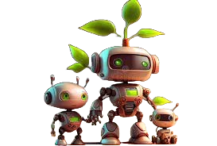

De opkomst van robots is natuurlijk iets heel moois en interessant, net zoals telefoons vroeger toen ze net een paar jaar bekend waren was het helemaal het ding, maar zodra er een nieuwe versie van uit komt de oude versie al gauw verwaarloosd en weggegooid. Daar hebben we natuurlijk van geleerd en tegenwoordig proberen we robots ook zo duurzaam mogelijk te bouwen. Vaak als je over milieuvriendelijkheid van producten praat denk je al gauw aan recyclen, maar in het geval van robots probeert men de levensduur zo lang mogelijk te maken zodat je hem helemaal niet weg hoeft te gooien.  meer nodig hebt hem aanpassen zodat hij weer een andere taak uitvoert hierdoor worden robots natuurlijk ook minder snel verwaarloosd. Robots zijn ook super duurzaam omdat ze vaak heel flexibel zijn, zo kan je als je een robot voor de ene taak niet.